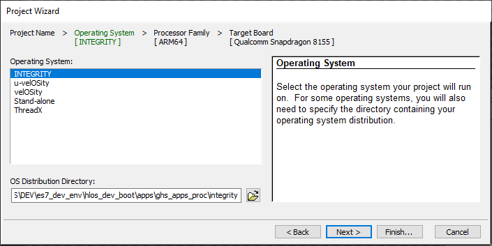
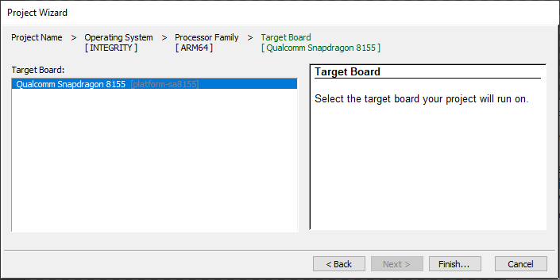
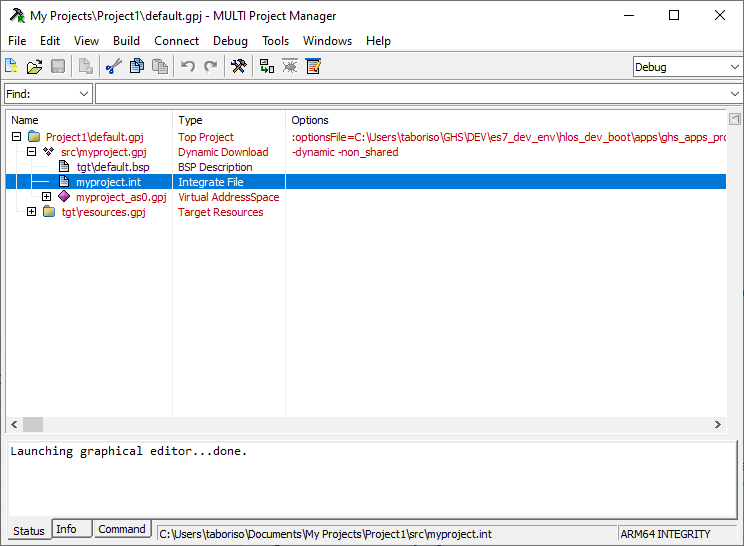
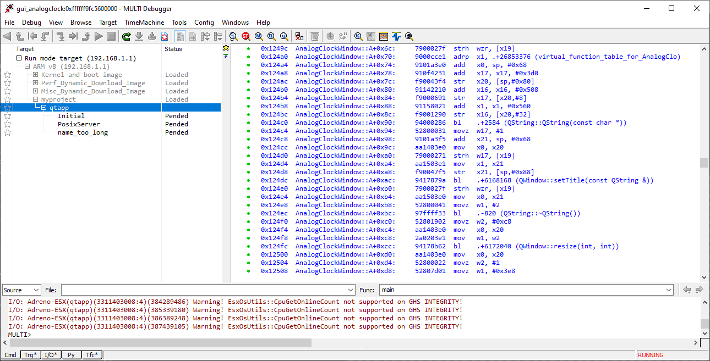

Building and flashing a Dynamic Download Project
This tutorial will guide you through building an INTEGRITY project for a Qt example application on a Windows 10 host. You can select any Qt example application that uses the Supported Qt modules.
Preparing the Qt application build environment
Before building the INTEGRITY project, you need to prepare your build environment. Run the setEnvironment.bat script from the Windows CMD terminal. For more information about the script, see Creating a batch script for Windows 10.
setEnvironment.bat
Building the Qt application example
To build Qt 6 application using CMake, run the following commands in the Windows CMD terminal:
"Qt installation path>\bin\qt-cmake.bat" CMakeLists.txt -GNinja -DCMAKE_PREFIX_PATH="C:\Users\user\targetbuild" -DQt6_DIR="C:\Users\user\targetbuild\lib\cmake\Qt6" -DQt6Core_DIR="C:\Users\user\targetbuild\lib\cmake\Qt6Core" -DQt6Gui_DIR="C:\Users\user\targetbuild\lib\cmake\Qt6Gui" cmake --build .
Where, qt-cmake is the wrapper script that calls CMake to configure your project with appropriate include paths.
Creating a Dynamic Download Project in MULTI
- Start MULTI Launcher and select File > Create workspace.
- In the creation window mode select New Project and click OK.
- In the dialog Project Wizard, select a path where the new project is to be created e.g. C:\Users\user\Documents\My Projects\Project1\default.gpj and click Next.
- Select INTEGRITY in Operating System dialog and click Next.

- Select Finish.

- Select Create New > Dynamic Download > Next.
- Select Settings For Dynamic Download > Finish.

Building a Dynamic Download Project
- Edit and save myproject.int file in the project tree:
AddressSpace Name qtapp Filename C:\path\to\your\qt\app\binary MemoryPoolSize 0x2700000 Language C++ HeapSize 0x90000 Task Initial StackSize 0x90000 StartIt false EndTask Extendedmemorypoolsize 0x300000 EndAddressSpace - Create a new file called 'multi_commands' and add the following commands to it:
switch -component "debugger.task.qtapp.Initial" route "debugger.task.qtapp.Initial" { __ntwcommand prepare_target } wait -load switch -component "debugger.task.qtapp.Initial" route "debugger.task.qtapp.Initial" { __ntwcommand resume } wait -time 240000 -stop switch -component "debugger.task.qtapp.Initial" unload myproject wait -time 8000 -stop savedebugpane cmd "autotestresult.txt" quitall - Run building and loading commands from the Windows CMD terminal:
multi.exe "C:\Users\user\Documents\My Projects\Project1\default.gpj" -build myproject & multi.exe "C:\Users\user\Documents\My Projects\Project1\dbg\bin\myproject" -connect="rtserv2 192.168.1.1" -p C:\Users\user\multi_commands &

Note: "rtserv2 192.168.1.1" is a board IP address. Check Set up the wiring to set up the board network.
Note: It takes several minutes to deploy by Dynamic Download.